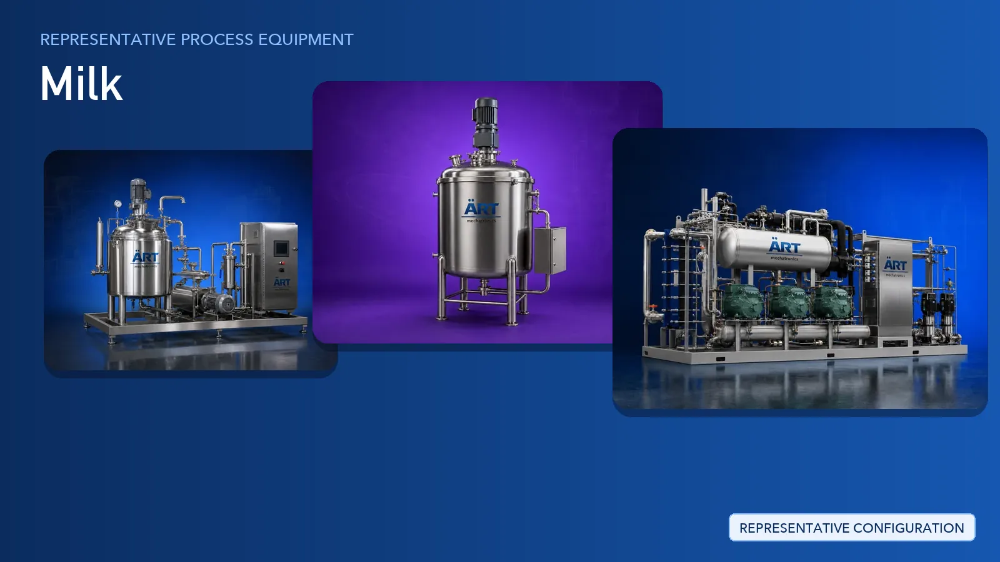

Milk Processing Plant & Machinery Solutions (Dairy, Soy, Oat, Almond, Rice & Coconut Milk)
Milk is one of the most widely consumed liquid food products in the world, covering both dairy milk and plant-based alternatives such as soy milk, oat milk, almond milk, rice milk and coconut milk.

About Milk processing
ART Mechatronics provides complete turnkey solutions for milk processing plants, offering systems for raw material reception, blending, heat treatment, homogenising, cooling, powder handling and packaging. Our solutions are engineered for hygienic food-grade operation, consistent product quality and automated, repeatable production for domestic and export markets.
Complete Milk Process Flow
Raw dairy milk or plant-based raw materials such as soy, oat, rice, almond and coconut are received, weighed and held under controlled conditions before processing.
Ensures a hygienic and continuous supply to the process line.
Soaked grains, nuts or coconut are wet ground and the liquid extract is separated from the solid residue. For dairy milk, the same stage covers clarification and separation of the incoming milk.
Delivers:
- A clean and uniform liquid base
- Removal of coarse solids and residue
- Consistent input for downstream blending
The liquid base is blended with water, stabilisers, sweeteners or fortification ingredients to reach the required recipe.
Ensures:
- Uniform recipe distribution
- Fully dispersed ingredients
- Batch-to-batch consistency
The blended milk is heat treated and held for the required time before rapid cooling.
Supports:
- Microbiological safety
- Extended shelf life
- Stable product quality
Heat-treated milk is homogenised so that the fat and solid phase is broken down and evenly distributed.
Prevents separation and gives a smooth, uniform mouthfeel.
Processed milk is cooled and held in chilled storage until filling. Where milk powder is the finished format, the concentrated liquid is dried and the powder is sifted before packing.
Covers both liquid and powder routes from a single processing line.
Finished milk is filled into bottles, pouches or cartons, then sealed, coded and labelled.
Suitable for retail bottles, pouches and bulk formats.
Turnkey Milk Plant Solutions
ART Mechatronics offers complete turnkey solutions for milk processing plants, including:
- Process design & plant layout
- Reception, storage and blending systems
- Thermal treatment and homogenising systems
- Cooling, chilling and cold storage integration
- Powder drying and handling systems
- Automation & control panels
- Filling and packaging line integration
- Installation & commissioning
- After-sales support
We customize solutions based on:
- Product type (dairy, soy, oat, almond, rice or coconut milk)
- Production capacity
- Shelf-life and thermal treatment requirements
- Finished format (bottle, pouch, carton or powder)
Why Choose ART Mechatronics for Milk
- Turnkey experience across dairy and plant-based milk lines
- Hygienic food-grade construction for liquid processing
- Integrated thermal treatment, homogenising and cooling systems
- Automated and repeatable batch control
- Single point of responsibility from layout to commissioning
- Global export and after-sales support capability
Where it's used
Get pricing & specs for the Milk plant
Share the product, target capacity, current process and plant location. These details help our engineers discuss the right machine or line configuration.
One partner, from design to start-up
ART Mechatronics designs, manufactures, installs and commissions your Milk plant solution with regional presence in India, UAE and Thailand.